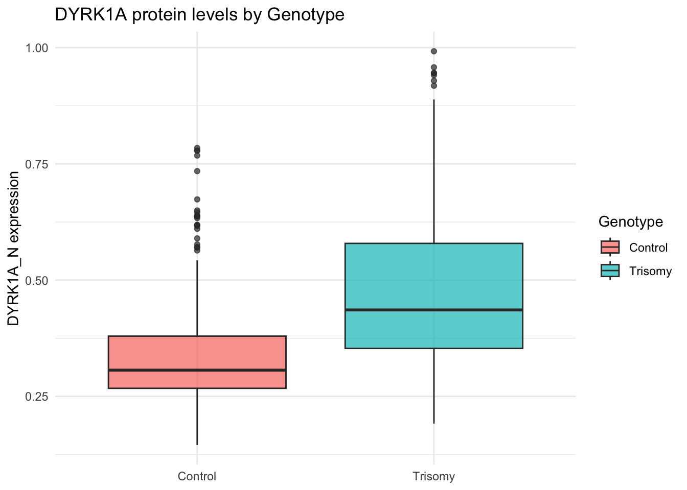

Warning: package 'dplyr' was built under R version 4.3.1
Attaching package: 'dplyr'
The following objects are masked from 'package:stats':
filter, lag
The following objects are masked from 'package:base':
intersect, setdiff, setequal, union
library(ggplot2)
Warning: package 'ggplot2' was built under R version 4.3.3
library(randomForest)
Warning: package 'randomForest' was built under R version 4.3.3
randomForest 4.7-1.2
Type rfNews() to see new features/changes/bug fixes.
Attaching package: 'randomForest'
The following object is masked from 'package:ggplot2':
margin
The following object is masked from 'package:dplyr':
combine
# Download the dataset from UCI repositorydata_url <-"http://archive.ics.uci.edu/ml/machine-learning-databases/00342/Data_Cortex_Nuclear.xls"download.file(data_url, destfile ="Data_Cortex_Nuclear.xls", mode ="wb")# Read the Excel file into a data framedf <-read_excel("Data_Cortex_Nuclear.xls")# Examine the data structuredim(df) # number of rows (samples) and columns (variables)
# Drop rows with any missing values for simplicitydf_clean <-na.omit(df)dim(df_clean) # new dimensions after removing incomplete samples
[1] 552 82
# The dataset has 82 columns:# - MouseID (identifier)# - 77 protein expression features (continuous numeric)# - Genotype (c = control, t = trisomy)# - Treatment (m = memantine, s = saline)# - Behavior (CS = context-shock, SC = shock-context)# - Class (combined factor of the above three conditions, e.g. "c-CS-m")## We will focus on the protein features as predictors, and use Genotype or Class as outcome in our analyses.
# ===========================# Encode and Verify Factors# ===========================# Convert 'class' column to character to safely extract genotypedf_clean$class <-as.character(df_clean$class)# Extract genotype: 'c' = Control, 't' = Trisomydf_clean$Genotype <-ifelse(startsWith(df_clean$class, "c"), "Control", "Trisomy")# Convert both to factorsdf_clean$Genotype <-factor(df_clean$Genotype, levels =c("Control", "Trisomy"))df_clean$class <-factor(df_clean$class)# Verify encodingtable(df_clean$Genotype)
# Expected output:# Control Trisomy # ~550 ~530 ## Class distribution:# c-CS-m, c-CS-s, c-SC-m, c-SC-s, t-CS-m, t-CS-s, t-SC-m, t-SC-s
# Select a subset of protein features to summarize (for brevity)features_subset <-c("DYRK1A_N", "ITSN1_N", "SOD1_N", "BRAF_N", "pERK_N")summary(df_clean[ , features_subset])
DYRK1A_N ITSN1_N SOD1_N BRAF_N
Min. :0.1453 Min. :0.2454 Min. :0.2171 Min. :0.1439
1st Qu.:0.2908 1st Qu.:0.4805 1st Qu.:0.3049 1st Qu.:0.2608
Median :0.3721 Median :0.5903 Median :0.3731 Median :0.3178
Mean :0.4152 Mean :0.6231 Mean :0.5281 Mean :0.3545
3rd Qu.:0.4957 3rd Qu.:0.7306 3rd Qu.:0.7059 3rd Qu.:0.3993
Max. :0.9922 Max. :1.3364 Max. :1.6105 Max. :0.8141
pERK_N
Min. :0.2119
1st Qu.:0.3426
Median :0.4478
Mean :0.5273
3rd Qu.:0.6535
Max. :1.3971
# Visualize protein distributions by genotype (Control vs Trisomy)ggplot(df_clean, aes(x = Genotype, y = DYRK1A_N, fill = Genotype)) +geom_boxplot(alpha =0.7) +labs(title="DYRK1A protein levels by Genotype",y="DYRK1A_N expression", x=NULL) +theme_minimal()

# Compute correlation matrix for the protein features (subset)corr_mat <-cor(df_clean[ , features_subset])round(corr_mat, 2) # show correlations rounded to 2 decimals
# Set seed for reproducibilityset.seed(42)# Split data into training and testing sets (70/30 split)train_indices <-sample(seq_len(nrow(df_clean)), size =0.7*nrow(df_clean))train_data <- df_clean[train_indices, ]test_data <- df_clean[-train_indices, ]# Verify split sizesnrow(train_data) # should be ~756 (70% of 1080, depending on NA removal)
[1] 386
nrow(test_data) # ~324 (30%)
[1] 166
# Fit logistic regression (GLM) on training dataglm_model <-glm(Genotype ~ DYRK1A_N + ITSN1_N + SOD1_N + BRAF_N + pERK_N, data = train_data, family = binomial)summary(glm_model)
Call:
glm(formula = Genotype ~ DYRK1A_N + ITSN1_N + SOD1_N + BRAF_N +
pERK_N, family = binomial, data = train_data)
Coefficients:
Estimate Std. Error z value Pr(>|z|)
(Intercept) -5.6210 0.8347 -6.734 1.65e-11 ***
DYRK1A_N 17.0734 4.7021 3.631 0.000282 ***
ITSN1_N 11.1384 2.4373 4.570 4.88e-06 ***
SOD1_N -0.6108 0.5410 -1.129 0.258939
BRAF_N 4.1875 2.8813 1.453 0.146127
pERK_N -17.6083 2.2933 -7.678 1.62e-14 ***
---
Signif. codes: 0 '***' 0.001 '**' 0.01 '*' 0.05 '.' 0.1 ' ' 1
(Dispersion parameter for binomial family taken to be 1)
Null deviance: 534.07 on 385 degrees of freedom
Residual deviance: 350.90 on 380 degrees of freedom
AIC: 362.9
Number of Fisher Scoring iterations: 5
# Predict probabilities on test settest_pred_prob <-predict(glm_model, newdata = test_data, type ="response")# Convert probabilities to class labels (threshold = 0.5)test_pred_class <-ifelse(test_pred_prob >0.5, "Trisomy", "Control") %>%factor(levels=c("Control","Trisomy"))# Confusion matrix and accuracyconf_mat <-table(Predicted = test_pred_class, Actual = test_data$Genotype)print(conf_mat)
Actual
Predicted Control Trisomy
Control 60 20
Trisomy 12 74
accuracy <-mean(test_pred_class == test_data$Genotype)cat("Logistic Regression Accuracy on test set:", round(accuracy *100, 2), "%\n")
Logistic Regression Accuracy on test set: 80.72 %
library(rstanarm)
Warning: package 'rstanarm' was built under R version 4.3.1
Loading required package: Rcpp
Warning: package 'Rcpp' was built under R version 4.3.3
Warning in check_dep_version(): ABI version mismatch:
lme4 was built with Matrix ABI version 1
Current Matrix ABI version is 0
Please re-install lme4 from source or restore original 'Matrix' package
This is rstanarm version 2.32.1
- See https://mc-stan.org/rstanarm/articles/priors for changes to default priors!
- Default priors may change, so it's safest to specify priors, even if equivalent to the defaults.
- For execution on a local, multicore CPU with excess RAM we recommend calling
options(mc.cores = parallel::detectCores())
# Fit Bayesian logistic regression (using the same five features)bayes_model <-stan_glm(Genotype ~ DYRK1A_N + ITSN1_N + SOD1_N + BRAF_N + pERK_N,data = train_data, family =binomial(link="logit"),chains =4, iter =2000, seed =42)
# Prepare feature matrix and outcome for random forestfeature_cols <-grep("_N$", colnames(train_data), value =TRUE) # all protein feature namesX_train <- train_data[ , feature_cols]y_train <- train_data$GenotypeX_test <- test_data[ , feature_cols]y_test <- test_data$Genotype# Train a random forest modelrf_model <-randomForest(x = X_train, y = y_train, ntree =500, importance =TRUE)print(rf_model) # model summary with OOB error
Call:
randomForest(x = X_train, y = y_train, ntree = 500, importance = TRUE)
Type of random forest: classification
Number of trees: 500
No. of variables tried at each split: 8
OOB estimate of error rate: 0.78%
Confusion matrix:
Control Trisomy class.error
Control 182 1 0.005464481
Trisomy 2 201 0.009852217
# Predict on test set using the random forestrf_pred <-predict(rf_model, newdata = X_test)# Confusion matrix and accuracy on test datarf_conf <-table(Predicted = rf_pred, Actual = y_test)print(rf_conf)
Actual
Predicted Control Trisomy
Control 72 1
Trisomy 0 93
rf_accuracy <-mean(rf_pred == y_test)cat("Random Forest Accuracy on test set:", round(rf_accuracy*100, 2), "%\n")
Random Forest Accuracy on test set: 99.4 %
# Determine the importance of featuresimportance_df <-data.frame(Feature =rownames(importance(rf_model)), MeanDecreaseAccuracy =importance(rf_model)[, "MeanDecreaseAccuracy"],MeanDecreaseGini =importance(rf_model)[, "MeanDecreaseGini"])# Top 10 features by importance (Mean Decrease in Accuracy)importance_df %>%arrange(desc(MeanDecreaseAccuracy)) %>%head(10)